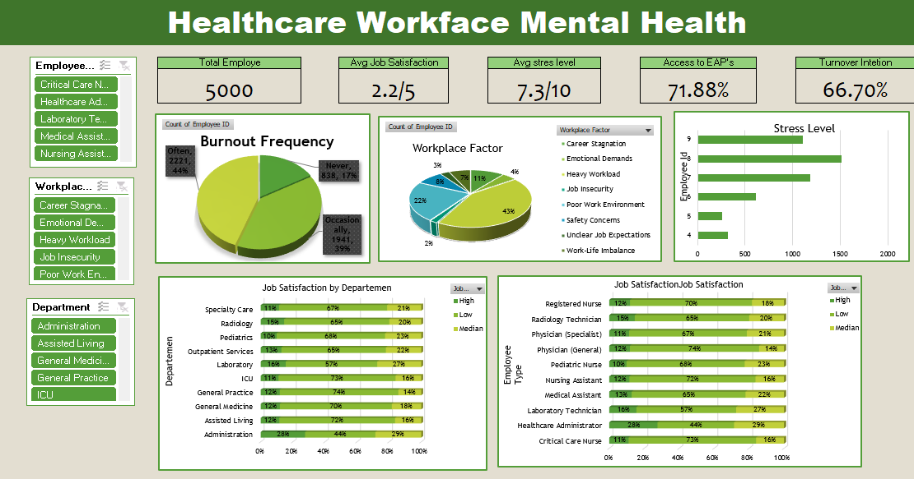

Employee Records
Avg. Stress Level
Avg. Job Satisfaction
Turnover Intention
Developed an interactive workforce analytics dashboard using Microsoft Excel, leveraging Pivot Tables, Pivot Charts, Slicers, and KPI Cards to analyze employee mental health, job satisfaction, workplace stress, and turnover intention. The dashboard transforms raw HR data into actionable insights that support strategic workforce planning and employee well-being initiatives.
A healthcare organization needed a simple yet effective analytical dashboard to monitor employee mental health indicators and workforce satisfaction. Although employee data was available, management lacked a centralized view to identify burnout trends, stress levels, and potential employee turnover.
Build an interactive dashboard that enables HR managers to:
The project followed a structured development workflow using Microsoft Excel:
The dashboard successfully consolidated 5,000 employee records into a single interactive report, enabling HR teams to quickly identify workforce risks and compare employee well-being across departments, job roles, and workplace conditions.
Insight: A significant portion of employees may consider leaving the organization, suggesting potential challenges in employee retention.
Business Impact: High turnover can increase recruitment costs, onboarding expenses, and productivity loss.
Insight: Stress levels remain relatively high across the workforce, indicating that workload and workplace conditions may negatively affect employee well-being.
Insight: Employees generally report low satisfaction, which may contribute to burnout and turnover intention.
Insight: The Burnout Frequency chart shows that many employees experience burnout occasionally or often, rather than never. Burnout is a widespread issue that requires proactive intervention.
Insight: The dashboard highlights that factors such as heavy workload, emotional demands, career stagnation, and poor work environment are among the most influential contributors to employee stress.